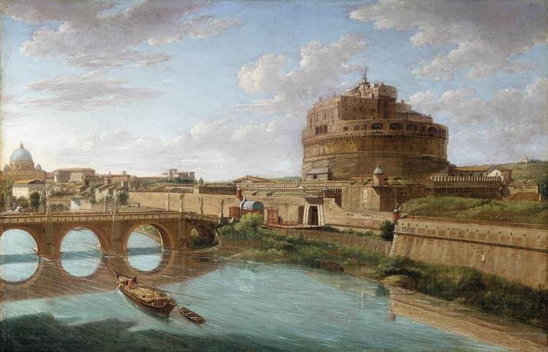
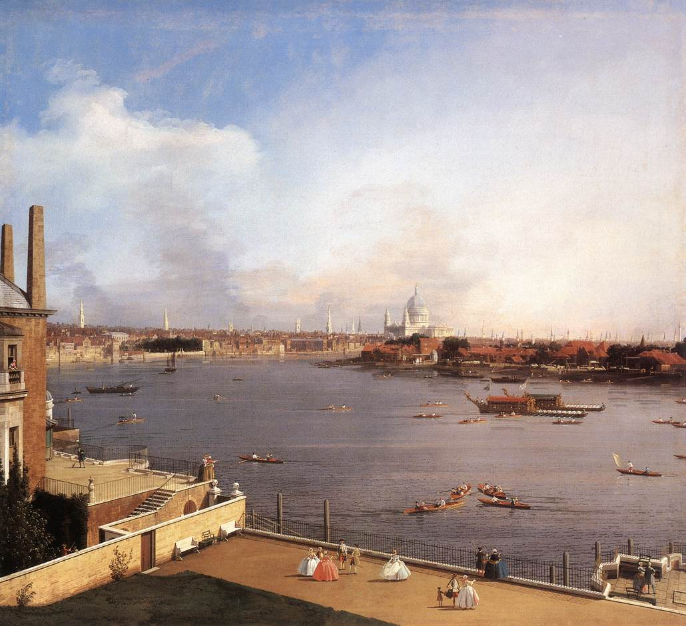
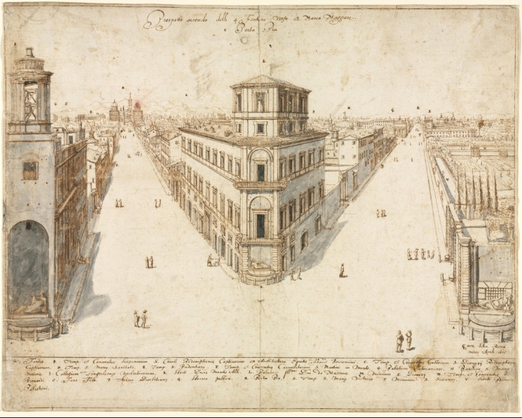
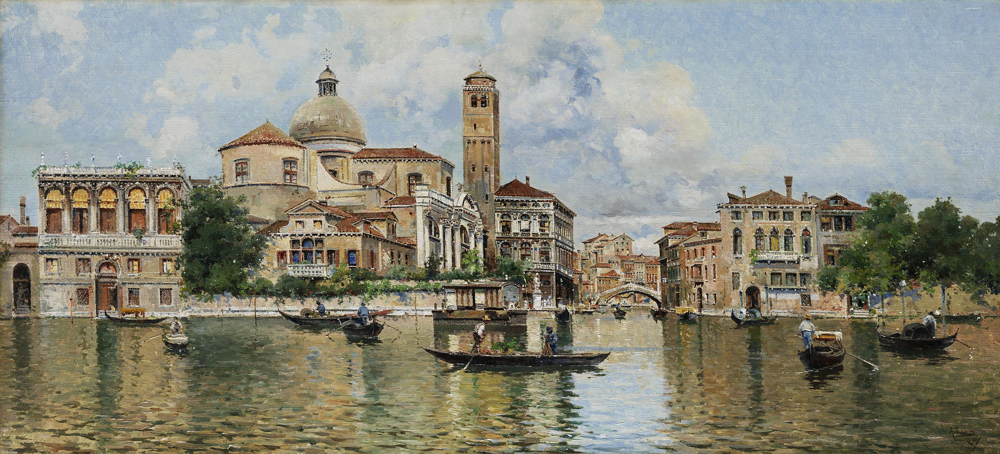
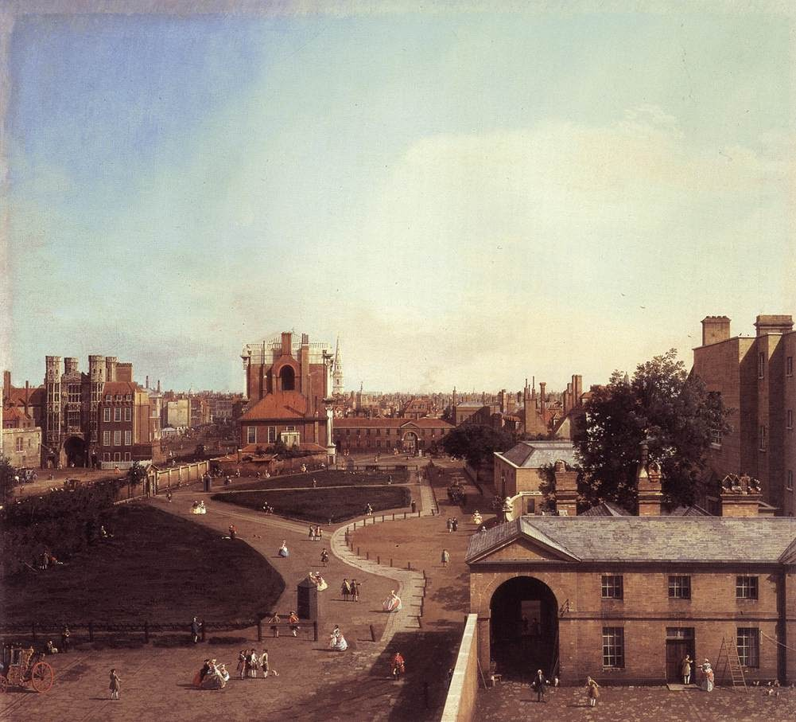
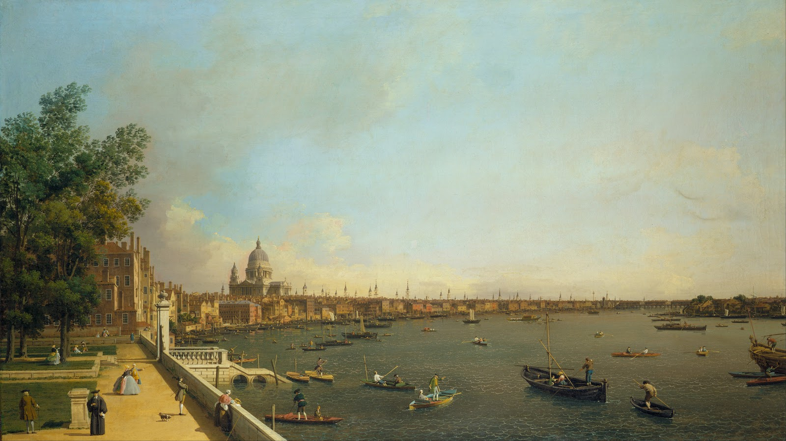

Veduta


The River Thames from Richmond House: a classic veduta by Canaletto, 1747

The Quattro Fontane Looking Toward Santa Maria Maggiore by Lieven Cruyl>

Venetian veduta by Antonio Reyna Manescau

No absolutely precise dates have been established for his stay in England; Canaletto returned briefly to Venice once during his English sojourn in 1750-1751, and he appears to have left permanently sometime after 1755.
